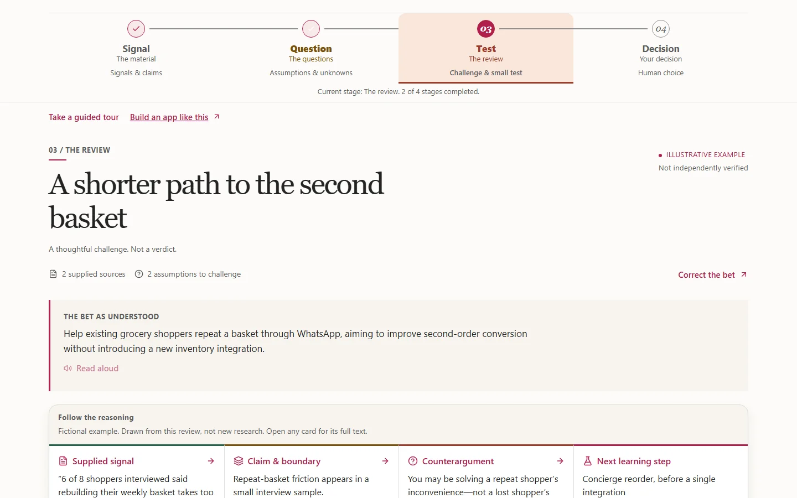
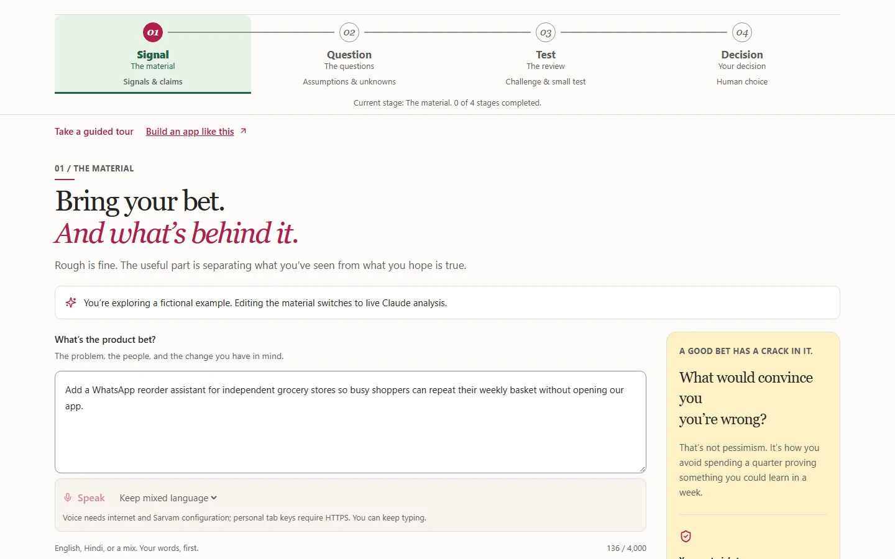
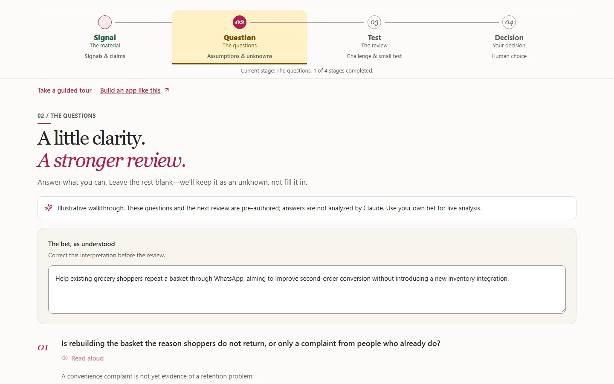
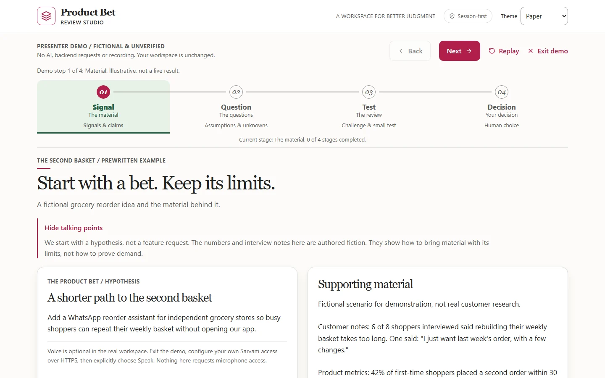
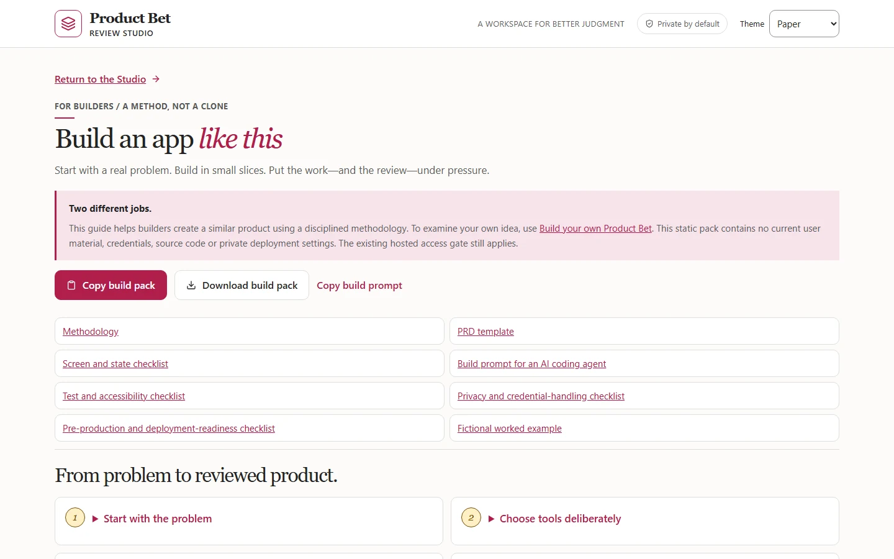

Guided tour
An optional, replayable orientation alongside your own work. It highlights controls without changing material or advancing workflow stages.
See the guided tour

A product studio. Not a prediction engine.
Bring the signal. Question the leap. Design a small test. Make a decision you can explain.
Product Bet Review Studio helps turn scattered material into a considered, human-owned decision—before a team commits to building.
Protected app: ask the host for the production passphrase. The fictional example and Presenter Demo need no provider keys; live analysis and voice need separate provider setup.

The problem with a promising idea
A quote becomes a trend. A friction becomes a feature. A confident answer starts to feel like permission to build.
This studio keeps the original claim, what it does not establish, and the next learning choice in the same conversation. AI can help organize and challenge supplied material. It cannot turn it into independent validation.
The method / four connected moves
Each output becomes the next input. Your judgment stays in the loop.
Select a stage below for what goes in, what comes out and where human judgment remains.
Inside the application
Genuine screenshots of the approved application. Expand a screen to look closer.
Every quote, number, analysis and decision pictured here is fictional and unverified. No research or test was conducted. Captured locally from candidate bd5107f without provider calls, credentials or authenticated browser state.



An optional, replayable orientation alongside your own work. It highlights controls without changing material or advancing workflow stages.
Walk through the four stages with pre-authored fictional material. No provider keys are needed. Editing the bet or interpretation switches to live analysis, which requires configuration.
What you need to try it →A separate, deterministic click-through with Back, Next, Replay, Exit and hideable talking points. It does not call providers, request the microphone or overwrite your work.

Take the method with you
Two authored packs. Neither includes user work or private app configuration.
Use a blank starter to name the user, evidence, uncertainty, challenge, small test and human decision. In the app, Build your own Product Bet explains how these hand off across stages.
Download the idea starterOpen the in-app idea guide ↗Start with a real problem, choose tools deliberately, write a buildable PRD, map states and ship small slices. Review the work—and review the review.
Download the builder packOpen the in-app builder guide ↗The pack is generated from the approved app's authored content: methodology, PRD and agent-prompt templates, screen/state, test/accessibility, privacy/credential and readiness checklists, plus a clearly fictional worked example.
Responsible AI boundaries are part of the method: no invented research, no automatic decision, mocked provider tests and a separate human release gate.

Trust is a boundary, not a badge
No claims of independently validated research, automatic certainty or complete production validation.
Work stays in app memory by default. Refreshing clears session work and personal keys. Only explicit draft consent saves the idea and supporting-material fields on that device; the user can remove that draft. An explicitly selected app theme is also saved.
There is no app review database. A live analysis or speech action sends the relevant content through the same-origin backend to its provider. Provider retention policies and operational hosting controls are separate considerations.
Personal Claude and Sarvam keys, when used, stay in tab memory until cleared or the page is left/refreshed. They pass through the trusted same-origin HTTPS backend for the selected operation, not directly from the browser to the provider.
Real analysis needs provider configuration. Voice additionally needs Sarvam access, HTTPS, a supported browser and explicit microphone permission for recording. Neither the tour nor Presenter Demo starts recording.
Quote checks establish that text comes from the supplied source—not that the source is true, representative or causal. Proposed tests and thresholds have not been run merely because they appear in a pack.
Live-provider quality, physical devices, screen readers and wider browser/zoom behavior still need the later detailed validation pass.
This is a static GitHub Pages site: no application backend, provider calls, microphone controls, analytics or user-content collection. It loads its own public assets and a public link-configuration file. Links you open lead to their own sites and policies.
Images show only locally captured fictional examples from the approved application. No protected staging session, cookies, traces, provider keys or real user material are published here.
The next move is yours
After signing into the interactive app, choose Presenter Demo to see the complete fictional journey, or Try an example to explore it yourself. Use Take a guided tour for an orientation alongside your own work.
Interactive app available. Shared-passphrase access is required; request the production passphrase from the host.
Open the live app ↗Protected app: ask the host for the production passphrase. The fictional example and Presenter Demo need no provider keys; live analysis and voice need separate provider setup.